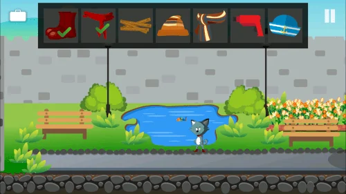
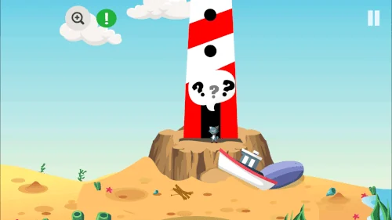

Tiny Story 3 · Aventure point-and-click


Notes et avis des boutiques
Google Play
Pas encore de note publique affichée.
50+
Voir la fiche et les avisApp Store
3.7
Voir la fiche et les avisNotes affichées séparément par boutique. Elles peuvent varier selon le pays et évoluer.
L’aventure
Un matin, Wolfy découvre que la mer a disparu. Son monde familier est devenu un mystère. Chaque objet et chaque rencontre peuvent lui apporter un nouvel indice.
Explorez des scènes dessinées à la main, collectez les objets utiles et accomplissez les quêtes pour comprendre ce qui est arrivé. Tiny Story 3 se joue hors ligne et sans publicité. Des vidéos de solution sont disponibles si vous avez besoin d’aide.
Au fil du jeu
Un mystère attachant
Que s’est-il passé pendant la nuit ? Suivez la piste, interrogez les habitants et reconstituez les événements qui ont mené à la disparition de la mer.
Contrôles simples et intuitifs
Touchez pour explorer, ramasser des objets ou les utiliser ensemble. Une interface fluide et agréable adaptée à tous les âges.

Besoin d’un coup de pouce ?
Des vidéos de solution gratuites vous aident à continuer l’aventure sans stress ni blocage.
